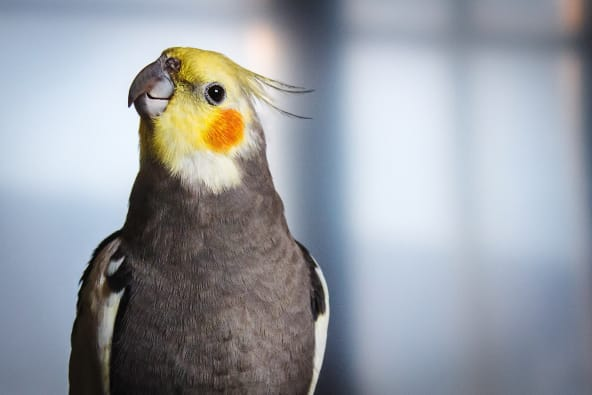
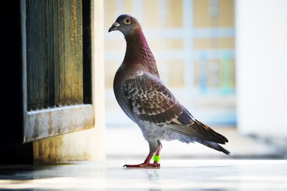

(PARROT PLANET)
Where Beauty Takes Flight

Birds Spread Seeds –
When birds travel, they take the seeds they have eaten with them and disperse them through their droppings.
This seed dispersal may be the most important ecological bird function, because many plant species rely almost entirely on birds for their propagation.

cost of replacing Nutcrackers
The estimated cost of replacing Clark’s Nutcrackers’ seed dispersal of whitebark pine alone is $11 billion across the range of whitebark pines in the U.S.
Famous Birds
- Cockatiels

Species Info=>
Weight:
3 ounce
Length:
12 to 13 inches (adults)
Physical Characteristics:
Predominantly gray feathers with orange spots around the ears and yellow and white accents.
Males are yellow-headed while females are almost completely gray.
Lifespan:
With proper love and care a pet cockatiel can easily live for 15 - 20 years.
In rare cases, these birds have been known to live for as long as 30 years.
- Doves

Species Info=>
Weight:
5 to 8 ounces
Length:
11 to 13 inches
Physical Characteristics:
Brown and dull gray feathers, black eyes, beak, and collar surrounding the neck.
Alternative colors include orange, white and pied (ring-necked doves).
Lifespan:
8 -15 years